Chess engine, pt. 6: Neural-net evaluation
This post is part of a series about building a chess-playing engine.
The engine we built in this blog post series is now capable of playing chess, and it understands the game decently on a tactical basis. However, a common comment from human players was that the engine plays “weird”. This unnatural-ness is a symptom of the engine having no knowledge of chess other than tactics.
In this post, I’ll cover some of the main methods, both traditional and modern, used to give the engine some positional knowledge. To do this, I will continue building on our engine’s evaluation function. Right now, it’s based on material counting, but by the end of this post, it will be replaced by a neural network.
First, though, a disclaimer. The purpose of this post is slightly different from the rest of the series, because I am not an expert on chess neural networks, or machine learning in general. The point of this post is not to describe best practice, but to show how to build a neural network, from the perspective of a beginner in ML. If I can do it, you can too!
Material counting
Let’s revisit our engine’s current evaluation function. Primarily, it is based on material counting; that is, each piece is assigned a point value, like a pawn is 1 point (or 100 centipawns), and the queen is 9 points. Then, whichever player (White or Black) has more points has more advantage.
The main reason material counting is useful is that it’s really effective at all levels of chess, and is low effort to implement. As I mentioned before, even the best chess players in the world would struggle if they had a huge material disadvantage.
However, there is of course more to chess than counting material. Take for example this opening, the Bongcloud Attack:
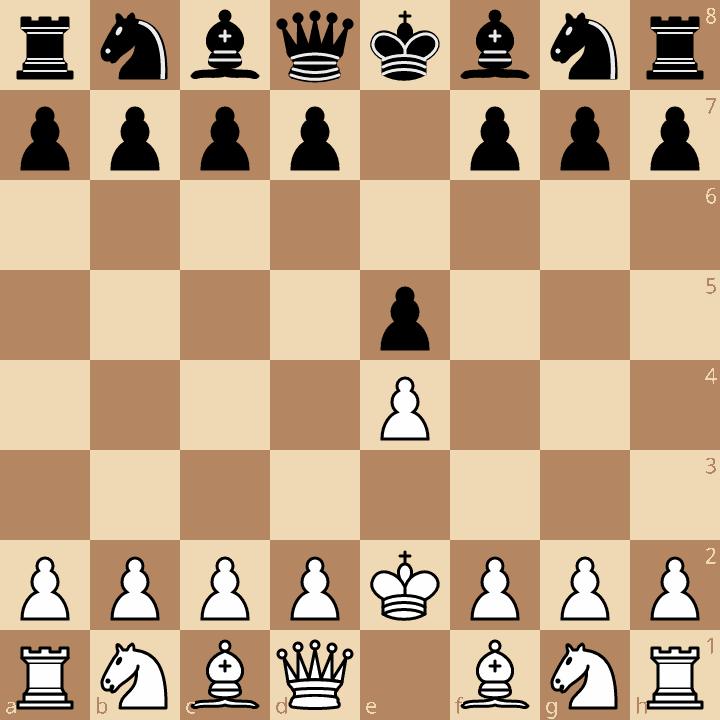
If we just counted material, for all we know, this position is perfectly equal for both sides. In reality, the Bongcloud is so bad for White that it has become a meme. Why is it bad? Wikibooks says that this opening “prevents castling to protect the King, endangers the King, ignores development and the center, and blocks the Queen and Bishop”.
Our engine can’t understand any of that, because it only sees that a side has a given piece, and it doesn’t know where that piece is.
Piece-square tables
To make the engine understand basic positional aspects of chess, we can use piece-square tables. These encode a score not just for having a piece, like “pawn is 100 centipawns”, but also their position, like “pawn on a6 is 180 centipawns”. This score includes the inherent material value of the piece (1 point), and a bonus for its advanced position on the board (0.8 points).
Piece-square tables can encode a lot of conventional wisdom about chess. For example, “knights on the rim are dim”, that is, knights on the edge of the board, and especially the corners, are less valuable because their mobility is limited. In practice, the piece square table is an array of numbers that represent the score for each square a knight could be on. For “knights on the rim are dim”, this could be the PST you use:
pst_knight_white = [
-70, -20, -20, -20, -20, -20, -20, -70,
-20, 0, 0, 0, 0, 0, 0, -20,
-20, 0, 0, 0, 0, 0, 0, -20,
-20, 0, 0, 0, 0, 0, 0, -20,
-20, 0, 0, 0, 0, 0, 0, -20,
-20, 0, 0, 0, 0, 0, 0, -20,
-20, 0, 0, 0, 0, 0, 0, -20,
-70, -20, -20, -20, -20, -20, -20, -70,
]
Each number represents a square, so the PST assigns scores for the entire chessboard. This PST specifically would penalize the knights for being on the edge, and doubly so for being in the corners.
The array is one-dimensional, because engines typically don’t use row/column notation (a1 is row 0, column 0); engines typically use a single number for every square, so a1 is 0, and h8 is 63. (Here is a neat visualization of which numbers correspond to which squares.)
Developers will often bake the material values of the pieces into the table. In pseudo-Python, it could look like this:
pst_knight_white = [score + 300 for score in pst_knight_white]
In other words, we can directly add the knight’s 3 point material value into the piece-square table, instead of it being a separate score we have to add.
Also, piece-square tables are usually given from White’s view of the board.
To get Black’s scores for each square, engines commonly do a vertical flip of White’s scores.
Using the standard square numbering convention, if a certain square is x, the vertically
mirrored equivalent square is x ^ 56 (the square’s index bitwise XOR 56).
Then to generate Black’s piece-square table, we can use this code:
pst_knight_black = [pst_knight_white[i ^ 56] for i in range(64)]
Note: In this post specifically, scores will be from White’s perspective, so positive is good for White, and negative is good for Black. For negamax, if we want Black’s perspective, we can negate the score. Typically, NNUE engines do not operate this way; they use perspective networks.
To keep with the sign convention, whenever we evaluate a position with the PST, we add scores for White, and subtract scores for Black.
So far, this is just the knight PST; you should also make a table for all the other pieces. For instance, pawns that are close to the end of the board are very valuable because they can promote.
Then, here is some pseudo-code for how your evaluation function could look like:
def eval(position):
score = 0
for square in range(64):
piece = position.get_piece_on(square)
if piece.color == white:
score += get_piece_square_value(piece, square)
else:
score -= get_piece_square_value(piece, square)
return score
Once you have piece-square tables in your engine, your evaluation function can become quite smart, depending on what heuristics you can encode in it.
Tapered evaluation
The game of chess is often divided into the opening, midgame and endgame phases. In the midgame and endgame phases, the PST is useful for guiding the engine’s moves. However, the best strategy for the midgame is probably not the best strategy for the endgame. Therefore, engines often have two piece-square tables, one for the midgame and one for the endgame.
As I mentioned in the last post, chess engines commonly determine whether it is the midgame or endgame based on how many pieces are still left on the board. Often, there will be a “phase” number that you calculate that will determine if you are in midgame or endgame. Based on this number, the engine will interpolate between using the midgame and endgame piece-square tables.
Interpolating between the tables is important (so I’ve read). If you use a fixed threshold and switch abruptly between the tables, the engine might avoid a good capture because it has a better score with the midgame table than the endgame table. To smooth out the difference, you “taper” the evaluation between midgame and endgame.
Summary
To briefly conclude this section, piece-square tables help your engine understand the value of where the pieces are on the board. To do this, each piece-square combination is assigned a bonus or penalty.
PSTs can be quite effective as an evaluation function. As of writing, the PeSTO engine, an engine that operates with piece-square tables only, is rated 3125 Elo on CCRL Blitz (for comparison, Stockfish is 3818). PeSTO’s evaluation function is the product of lots of effort and fine-tuning, but it goes to show that PSTs are pretty powerful, despite their relative simplicity.
Neural network evaluation
One of the main reasons I did this chess engine project was to get experience with training and running neural networks.
I saw DeepMind’s work with AlphaZero, a neural-network based chess engine with zero knowledge of chess that learned to play at a superhuman level within a few hours. The idea behind AlphaZero is quite elegant; by having the network play games against itself, then training from these games, it managed to learn chess with no external help or initial knowledge of chess except for its basic rules.
Before machine learning became commonplace, hand-crafted evaluation (HCE) techniques like piece-square tables were the norm in chess engines. At the time, engine developers had to be good enough at chess to codify the winning strategies of the game.
My idea was, if I can’t play half-decent chess, maybe my computer could learn about chess by itself like AlphaZero did. (I can say in hindsight that my engine was definitely far from AlphaZero’s success, but it did succeed at learning chess at a higher level than my own understanding of it.)
Now, since this was my first significant neural network project, I made a lot of mistakes doing it. Generally, the advice I give here is hopefully decent, but in the real project my methods were flawed. The purpose of this part is to document what I did and what I did wrong, but also to show you that getting into chess neural nets isn’t super difficult. Chess-inator is really bad relative to the best engines out there, but it’s much better than anything I thought I could ever make on my own.
Also, before I continue, you should probably have some knowledge of neural networks, like what is a neuron and activation function, or how the typical neural network’s forward pass works.
NNUE
Neural networks and machine learning can be a bit scary, because they commonly need lots of costly hardware to run. AlphaZero was trained using thousands of TPUs specialized for neural nets, and many other ML projects require GPUs at inference time.
With many modern chess engines, though, you don’t need a GPU to run the neural network anymore.
NNUE, or Efficiently Updatable Neural Network, is a neural network design that is specifically CPU-friendly. Unlike deep learning, where there are many layers of neurons, I like to call NNUE “shallow learning”, because it often uses a very small amount of layers. Because of this small layer count, and the nature of games like chess, this type of network allows for extreme speed optimizations. Other neural networks may be more intelligent, but NNUE makes up for it in speed.
The goal of NNUE is to replace the evaluation function in our engine (which might be material counting, or piece-square table, or any other HCE logic). It takes in a chess position, and gives us a score for it.
Before I get into the details, I want to say that at a beginner level, you can definitely wrap your head around NNUE. The folks making Stockfish and other advanced engines have really complicated neural networks, which makes it seem like NNUE is hard to implement. However, basic NNUE designs are actually quite simple, but also very effective.
PST, again
To ease you into the idea of NNUE, let’s take the piece-square tables we had earlier, and turn them into a neural network.
Recall that in the piece-square table, each combination of piece and square is assigned a score. The color of the piece is also important for the score’s sign. For instance, a White Pawn on a1 could be worth 100 centipawns, while a Black Rook on h8 would be worth -500 centipawns.
There are 6 pieces (rook, knight, bishop, queen, pawn, king), 2 colors (White, Black), and 64 squares on the chessboard. These features make up 768 inputs to the piece-square table. Based on these inputs, the table returns a single value, the score of the position.
We can therefore represent a piece-square table as a neural network with no activation functions, and no biases:
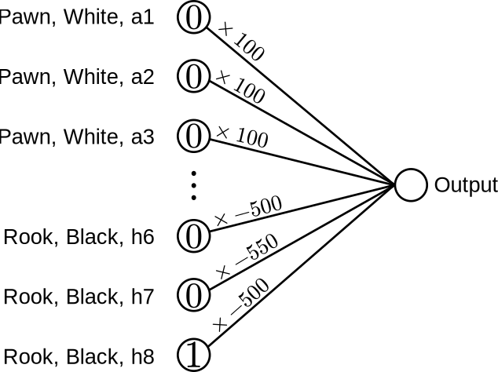
Each input is either a 1 or a 0. For instance, if the first input is 1, that means “there is a White pawn on a1”. Otherwise, “there is not a White pawn on a1”.1
These inputs almost fully represent a chess position. Notably, castling rights and en-passant aren’t accounted for. However, for our purposes, the evaluation function doesn’t have to be perfect, and our engine’s search will take care of those elements. (I like to think that the evaluation function is the intuition of the chess engine, while search is the logical brain, so that evaluation doesn’t have to be 100% accurate in its calculations.)
We then multiply each input by a weight. (In the example diagram above, I picked some arbitrary numbers like 100 and -500, which roughly correspond to the material values of the White pawn and Black rook, in centipawns.) Then, we take the sum of the products, and the resulting output is the score of the position in centipawns. The score is from White’s perspective; a positive score is good for White, and a negative score is good for Black.
In other words, we add the values of all White pieces, and subtract the values of all Black pieces. But now, instead of explicitly doing that calculation, we use a neural network to do it.
Here is some pseudo-code for evaluating the neural network’s output:
WEIGHTS = [100, 100, 100, ..., -500, -550, -500]
def forward_pass(inputs):
output = 0
for i in range(768):
output += WEIGHTS[i] * inputs[i]
return output
But since the inputs are binary zeroes and ones, this code is equivalent:
def forward_pass(inputs):
output = 0
for i in range(768):
if inputs[i] == 1:
output += WEIGHTS[i]
return output
Now, we have a “neural network” that implements a piece-square table.
Incremental update
In this section, I’m going to continue using the simple PST neural network in the diagram above to explain the core idea behind NNUE. Remember that NNUE stands for efficiently updatable neural network. What does that mean?
In the evaluation function code I showed above, there is a for loop that iterates over all 768 inputs. In the PST, this isn’t that bad; for computers, a few hundred operations is nothing in terms of time. However, for more complicated neural networks, we start getting nested for loops, and in that case doing the same thing 768 times becomes computationally expensive.
To avoid this all looping and repetition, engines use incremental updates. The engine always keeps track of the score output of the current position. Whenever we make a move on the position, we only need to calculate the difference in score between the old and the new position. Since individual moves don’t change the position that much, this calculation is really simple.
As an example, suppose our engine is using material counting, and we are trying to calculate the score after exd5.
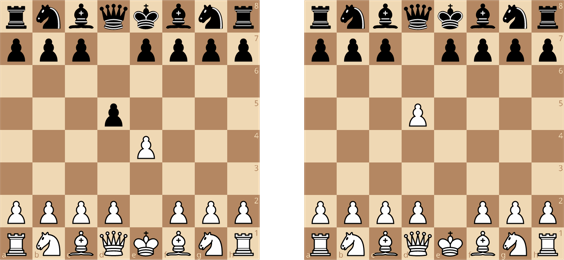
If I tell you that the material score of the first position is 0, what is the material score of the second position? It’s a 1 point advantage for White, because the only difference between the two positions is that Black’s pawn was removed. With material counting, when a piece is removed, its score is removed from the evaluation. When a piece is added, its score is added.
If we apply this same idea to the PST neural network above, whenever an input bit is changed to a 1, we add its weight, and whenever a bit is changed to 0, we subtract its weight from the output.
For instance, if we move the Black rook from h8 to h7 (assuming there is no piece on h7), we turn on Rook, Black, h7 (bit 766),
and we turn off Rook, Black, h8 (bit 767):
# this is the score before we move the rook.
original_score = forward_pass(inputs)
# this is the score after moving the rook.
new_score = original_score + WEIGHTS[766] - WEIGHTS[767]
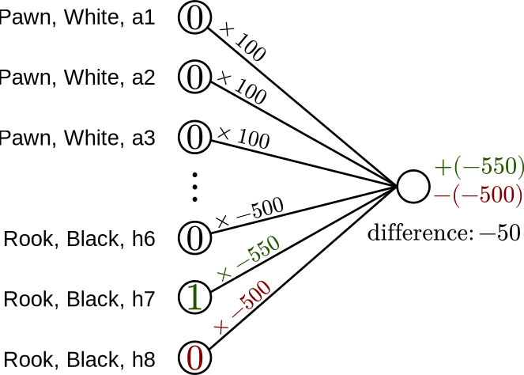
Similar incremental updates can be done for captures too; a capture turns two bits off, and one bit on.
We also need to implement a way to “undo” the score, since we can unmake moves. Whenever we unmake moves, we do the inverse operations to restore the original state. For example:
original_score = ...
# make move (Rh7)
score += WEIGHTS[766]
score -= WEIGHTS[767]
# unmake move (Rh7)
score -= WEIGHTS[766]
score += WEIGHTS[767]
# score is now back to the original state.
Now that we have incremental updates, we can re-evaluate our PST neural network in only a few operations, rather than re-doing 768 operations every time.
In the engine’s function for applying a move to a position, and undoing a move, you can add calls to the incremental update functions. Then, whenever you make moves on the board, the evaluation updates accordingly; whenever you unmake/undo moves, the evaluation returns to its original state.
NNUE, one hidden layer
Now that we’ve covered a contrived piece-square table neural network, I introduce a basic NNUE design:
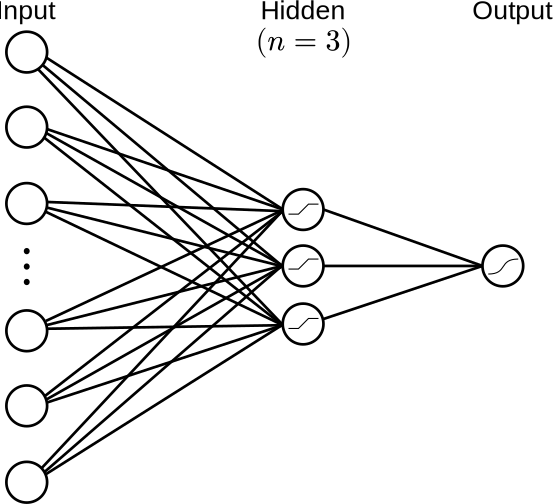
This neural network takes the same chessboard input as before, and outputs a score for it. However, the network is now more complex.
Notably, we introduce a hidden layer of neurons. There are also biases on the hidden layer nodes and the output node. I chose to have 3 hidden layer nodes in this example, but there’s usually more than that (i.e. dozens to a few thousand).
In the hidden layer, I’m using the clipped ReLU (sometimes called CReLU) activation function.
The original ReLU (rectified linear unit) is a common activation function defined as ReLU(x) = max(0, x).
Clipped ReLU is similar, but it completely clamps the output between 0 and 1.
We can define the function as CReLU(x) = max(0, min(x, 1)), or equivalently, CReLU(x) = clamp(x, 0, 1).
Here is the graph for CReLU (Desmos):
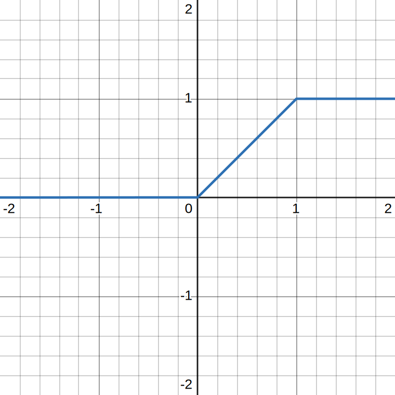
CReLU is (from what I’ve read) not an ideal choice, but it’s simple and easy for beginners to deal with. The hidden layer’s activation function will be very often used compared to the output node’s activation function, so we ideally pick a function can be optimized for speed. CReLU’s limited range is good for optimization (we’ll see later), which is why it is preferred over ReLU.
One major difference between this neural network and our PST is that the output is no longer a score in centipawns (known as CP-space). Now, we express the position’s score as a win probability in WDL-space: a 0.0 is a loss, a 0.5 is a draw, and a 1.0 is a win. When I talk about training the network in the next section, you’ll see that using WDL is more natural than centipawn scores. Centipawns are the traditional unit for scores, though, so we need to find a way to convert between CP-space and WDL-space. Engine developers have figured out that a sigmoid function is pretty good for that task. Sigmoid functions look like this:
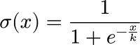
where k is a scaling constant.
For our purposes of converting between centipawns and WDL, a value of k = 400 is commonly used to scale the sigmoid properly.
Here’s a graph (Desmos):
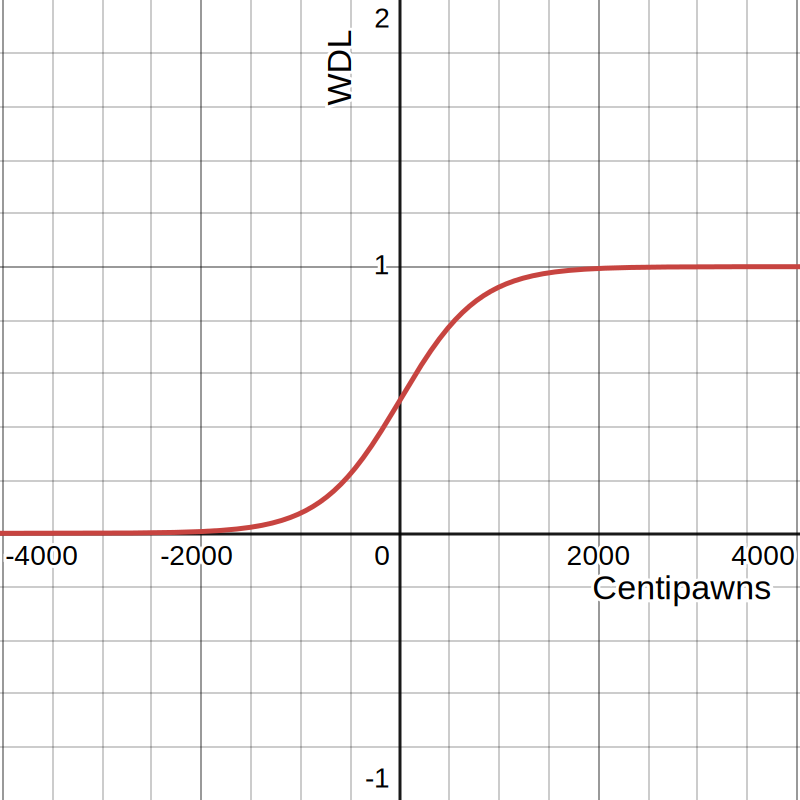
On the X-axis, we have centipawns, and on the Y-axis, we have win probability. The output of a sigmoid function is between zero and one, and its domain is all real numbers. This makes it ideal for our purposes of creating a WDL score. You can see that for negative centipawn scores, the game is probably a loss (near 0), and for high centipawn scores, the game is probably a win (near 1).
Since we want the neural network to provide us with a WDL-space score,
the output neuron’s activation function is also a sigmoid function.
However, we use a k = 1 curve, not the k = 400 centipawn-WDL curve.
I’ll explain why we do this later.
Training process
For now, let’s focus on the way the network is trained. The NNUE is supposed to take a board position, and return an accurate WDL score. To accomplish this task, we need to figure out good values for all the weights and biases. Gradient descent is the tool used to do this.
By providing examples pairs composed of a chess position (input) and a correct evaluation of the position (output), gradient descent works backwards to tune the weights so that the network is as accurate as possible.
The problem is, how do we get these examples? One supervised learning approach would be to have Stockfish evaluate a bunch of positions, and use those position-score pairs as examples. That’s cheating, though; in a way, we’re stealing Stockfish’s existing knowledge of chess.
Instead, the more fun solution is to generate training data ourselves. We have the engine play against itself for lots of games, and then extract all the positions from these games. We also track the engine’s evaluation of the positions, and the result of the game.
Then, for every position, the “correct” evaluation is a linear interpolation between the engine’s evaluation, and the real final result (win, draw, loss) of the game.
- First, the engine’s centipawn evaluation for the position is converted to WDL space using the sigmoid curve (
k = 400) we saw earlier. - Then, we convert the game’s result into WDL, either 1.0, 0.5 or 0.0.
Now, we have two scores for the position, both in WDL space (i.e. between 0 and 1), that we mix together. This way, the engine learns from the outcomes of its games. Eventually, with enough positions, the neural network will learn what wins and what loses in positions.
The positions in the training dataset must be quiescent positions. That is, there must not be any pending captures or imminent checkmates. Remember how material counting breaks in non-quiescent positions? If we train the neural net on non-quiescent positions, it will also get confused.2
Typically, NNUEs are trained on the order of hundreds of millions of positions. According to an Engine Programming Discord member kind enough to answer me, the training games can be run with a “5000 node soft limit” on the search, for example. I assume this means that after an iterative deepening iteration, if the count of game tree nodes visited in negamax exceeds 5000, break the loop. Also, I assume this node limit helps generate more positions in a small amount of time.
Since training operates on a huge amount of chess position data, it is essential that you encode it in an efficient way. FEN, or worse, just storing the input features as a boolean array, are horrible formats; instead, you should use binary packed formats. In the worst case scenario, this is the difference between your training requiring 128GB of RAM, or 3GB of RAM to run. See this blog post from a Lichess developer about Stockfish’s NNUE position format. On average, their format requires 18.7 bytes per position.
At the time I wrote the engine, I had no idea of how any of this worked, so I actually trained chess-inator on only a few million positions, which is “drastically little” for the network I was using. I believe, as a consequence of this lack of training data, my NNUE was severely restricted in its performance. Also, I was limited by my terrible position encoding which consumed a large amount of RAM. At the end of this article, I’ll talk about these issues more and mention some of the things I did to cope with these problems.
An unoptimized implementation
Now, here’s the forward pass of the neural net in pseudo-code, and I hope it answers any of your questions about how it works:
def crelu(x):
return clamp(x, 0, 1)
def sigmoid(x):
# k = 1
return 1 / (1 + exp(-x))
# hidden layer size
L1_SIZE = 3
# number of input bits
INPUT_SIZE = 768
WEIGHTS_L1 = [
[...3 weights],
[...3 weights],
[...3 weights],
... 768 times total
]
BIASES_L1 = [...3 biases]
WEIGHTS_OUTPUT = [...3 weights]
BIAS_OUTPUT = 1 bias
def forward_pass(inputs):
# pre-activation state of the hidden layer
hidden = [0, 0, 0]
for j in range(L1_SIZE):
for i in range(INPUT_SIZE):
if inputs[i] == 1:
hidden[j] += WEIGHTS_L1[i][j]
hidden[j] += BIASES_L1[j]
# weighted sum of hidden layer's activations, plus bias
output_preactivation = 0
for j in range(L1_SIZE):
output_preactivation += WEIGHTS_OUTPUT[j] * crelu(hidden[j])
output_preactivation += BIAS_OUTPUT
output = sigmoid(output_preactivation)
return output
I wrote this forward pass function here so you can understand exactly how the neural network operates without any optimizations. Practically, this is exactly how it operates in my Python neural network training code. In the following sections though, I’ll be improving this code until it runs fast. This is necessary in the engine side of things (the Rust side in my engine).
Sigmoid at runtime
The neat thing about the sigmoid activation function we used for the output neuron
is that we don’t need it at runtime (i.e. when the engine is playing chess.)
Because the curve that converts between CP-space and WDL-space is also a sigmoid,
we’re actually training the neural network to think in terms of centipawns.
Here’s the k = 400 curve that converts CP-space to WDL-space, but with clearer variable names.
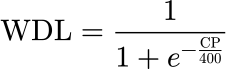
And here is the sigmoid activation function that we actually use in our neural net:
where x is the pre-activation of the output neuron, and σ(x) is the neuron’s output.
Since we’re training so that σ(x) is equal to WDL, that implies that
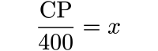
and therefore,
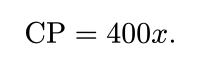
If your eyes glazed over the moment you saw math equations, here’s the key point of this section: we can multiply the neural net output’s pre-activation by 400, and interpret that value as being in centipawns, rather than using a WDL output.
Thus, we can change our evaluation function to be like this:
SCALE_K = 400
def forward_pass(inputs):
for _ in range(L1_SIZE):
for _ in range(INPUT_SIZE):
... # see last section; I removed this code for brevity
output_preactivation = 0
for j in range(L1_SIZE):
output_preactivation += WEIGHTS_OUTPUT[j] * crelu(hidden[j])
output_preactivation += BIAS_OUTPUT
# HERE: notice how the sigmoid is missing
return output_preactivation * SCALE_K
and instead of returning a weird 0.0 to 1.0 win probability value from the neural network,
the evaluation function will return a centipawn score, just the way we’re used to.
Also, we avoid computing sigmoid, which saves time.
Incremental update for NNUE
Notice that the forward pass has an expensive nested for loop,
which does 768 * L1_SIZE iterations.
That’s bad; with a sufficiently big hidden layer, this could become a million iterations.
The key observation that defines NNUE is that we can also apply incremental updates to this neural network, just like I demonstrated earlier with the PST. Each time we need an evaluation, we don’t have to re-compute the entire forward pass; we only need to calculate the difference caused by a few input bits changing.
Here is code that turns on or turns off bits in the input layer, then incrementally updates the NNUE evaluation:
# hidden layer size
L1_SIZE = 3
# number of input bits
INPUT_SIZE = 768
# sigmoid parameter
SCALE_K = 400
WEIGHTS_L1 = [
[...3 weights],
[...3 weights],
[...3 weights],
... 768 times total
]
BIASES_L1 = [...3 biases]
WEIGHTS_OUTPUT = [...3 weights]
BIAS_OUTPUT = 1 bias
# current hidden layer state (pre-activations)
hidden = [...3 elements]
def bit_set(i, on):
"""Set bit `i` on or off."""
if on:
inputs[i] = 1
for j in range(L1_SIZE):
hidden[j] += WEIGHTS_L1[i][j]
else:
inputs[i] = 0
for j in range(L1_SIZE):
hidden[j] -= WEIGHTS_L1[i][j]
def evaluation():
"""Get NNUE output (centipawns)."""
output = 0
for j in range(L1_SIZE):
output += WEIGHTS_OUTPUT[j] * crelu(hidden[j])
output += BIAS_OUTPUT
output *= SCALE_K
return output
# example: move rook from h8 to h7
bit_set(767, False)
bit_set(766, True)
score = evaluation()
# then unmake (undo) the above move
bit_set(767, True)
bit_set(766, False)
Each bit-set operation now only requires L1_SIZE operations to update the hidden layer pre-activations.
Then, once we want the NNUE’s output, we use another L1_SIZE operations to run the hidden layer’s activation functions and sum them to get a final score.
This is much better than the earlier 768 * L1_SIZE number of operations.
Commonly, the term accumulator is used to describe the hidden layer pre-activations (hidden in the above code).
The accumulator is the only state that you maintain for the NNUE;
the output (and any further layers there might be) are computed from the accumulator state.
Using incremental updates, it’s highly efficient to update the accumulator,
so adding more hidden layer nodes is cheap.
The accumulator is the efficiently updatable part of NNUE.
If we had more layers after the accumulator (some engines do), these
would not be efficiently updatable, and would have to be entirely recomputed every
time.
SIMD, assembly-level optimization
I want to stress the importance of a few implementation details in bit_set above.
First of all, WEIGHTS_L1 is indexed first by the input node,
then the hidden layer node.
This makes it so that in the loop,
array elements that are next to each other in memory
are accessed one after the other.
Secondly, in bit_set, I use if outside, and the for inside, even if this causes a bit of code duplication.
This is the commonly advised way to write the loop,
since this way we avoid repeatedly testing a condition that won’t change between iterations.
In my original code, I implemented both of these things the wrong way. After a long time fiddling in Godbolt’s Compiler Explorer and looking at the generated assembly, I figured out what was wrong, fixed the code and the compiler suddenly started generating SIMD instructions. SIMD (single instruction, multiple data), or vectorized code means that instead of adding the weights one at a time to the accumulator, it would add multiple elements at a time, speeding up the process.
The new vectorized code was amazingly snappy; I was actually overjoyed seeing the engine evaluate positions multiple times faster. This was the first project where I actually had to go read the compiled assembly to deeply optimize my program. Usually, in competitive programming (and a lot of other domains), we only think about asymptotic time complexity. For my chess engine, I had to optimize the constant factor, which I had ignored all these years.
Note: In my engine, since its logic is simple, the compiler (rustc, powered by LLVM) managed to auto-vectorize the code. I often see that other engine developers manually vectorize their code, which is too complex to auto-vectorize.
Quantization
Other than heavy use of SIMD, the other major optimization in NNUE is quantization. Floating point numbers are evil (*personal opinion), so engine developers prefer to use integers rather than floating point numbers to represent the NNUE’s accumulator state. One reason is that integers are faster than floating point.
The other reason to use integers is to avoid floating point error.
Infamously, 0.1 + 0.2 = 0.30000000000000004.
In a typical neural network, this infinitesimal error could be acceptable.
However, remember how our chess engine works.
It tries a move, evaluates, undoes the move.
Tries another move, evaluates, undoes.
Each time the engine makes or unmakes a move,
it is also incrementally updating the evaluation.
The engine relies on the undo operation to get back to the original, clean, NNUE accumulator state.
With floating point, the undo will return to a slightly different “original” state than before.
Eventually, because of errors accumulating, repeated undos will return to an accumulator state that is completely different from the original.
Here’s an analogy: imagine you’re using a text editor, and you type:
Hello World!
Then you undo, and get this:
Helln
Then you type some other word, like “Everyone!”:
Helln Everyone!
Then you undo, and repeat this over and over again a thousand times, and you end up with this:
Hexza
This is of course not the behaviour you want; you would expect the text to still be Hello.
In this analogy, Hello represents the accumulator’s original state,
which, while making and unmaking moves repeatedly,
gets corrupted by floating point errors and becomes Hexza.
Note: In my experience,
this sort of catastrophic floating point error only happened with
16-bit (half precision) floats,
and is not nearly as bad on f32 (single) and f64 (double) types.
I’m sure there’s still some drift of the accumulator state, though.
This issue can’t happen if we used integers to represent the accumulator state,
because in integers, 1 + 2 = 3 exactly,
with no error whatsoever.
Now, the problem is that
neural networks don’t use integers, they use floating point numbers.
We need to quantize the network’s parameters, i.e. convert the floating point numbers to integers.
Naively, we could round all the numbers to the nearest integer.
However, this causes inacceptable error.
For example, let’s say one of the weights in our NNUE is 0.51.
If you round 0.51 to 1, that’s a nearly 96% relative error on the original value.
To lessen this rounding error, we can scale all the values by some constant.
For example, let’s multiply the values by 10.
Then we round 5.1 to 5, which is much better (~2% error) than before.
Once we’re done with the calculations, we can divide out the scaling constant to get a real answer.
Here’s a simple example with a linear function. This is our original function:
def f(x):
WEIGHT = 0.33
BIAS = 0.51
return WEIGHT * x + BIAS
If we rounded the weight and bias naively, we get this function:
def f_round_naive(x):
WEIGHT = 0
BIAS = 1
return WEIGHT * x + BIAS
and if we apply a scaling constant of 100:
def f_quantized(x):
WEIGHT = 33
BIAS = 51
# `//` is integer division
return (WEIGHT * x + BIAS) // 100
Now, let’s compare their outputs for x = 20:
>>> f(20)
7.11
>>> f_round_naive(20)
1
>>> f_quantized(20)
7
You can see that the properly quantized function has almost the right answer, and that the naively rounded function is completely wrong.
Let’s apply quantization to our basic NNUE network now. We can keep our training process completely the same (i.e., with floating points), and only quantize the weights after. That is, once we have a fully trained neural network, we take its floating-point parameters, then convert them to integers before using the network in the engine.
Before quantizing, we scale the neural net parameters:
- Multiply the accumulator’s weights and biases by
SCALE_L1, which is defined to be255. - Multiply the output’s weight by
SCALE_OUT, which is defined to be64. - Multiply the output’s bias by
SCALE_OUT * SCALE_L1.
(I just took the values straight from the Wiki article, which says that these are commonly used.) Then, we round the model parameters to the nearest integer. Once the model parameters have been quantized, we need to modify the inference code in the actual engine. This happens in two places:
- We re-define CReLU to be
clamp(x, 0, SCALE_L1). - At the end of the neural net forward pass, we divide
by
SCALE_L1 * SCALE_OUT, i.e.255 * 64.
After the division, the result is exactly the same as before scaling (if we exclude rounding error). For an explanation of why, please see this appendix to this post.
The model now being quantized, everything in the engine code operates with integers, so the neural network inference is faster, and most importantly, does not have drift caused by floating point error. The trade-off for this is that the result is less accurate, because rounding the parameters creates a different kind of error (but this error does not build up over time).
It is important to carefully consider the data-types you use in your engine code,
because it could make SIMD more effective.
Recall that SIMD means you are executing a single instruction,
on multiple data.
The amount of data a single instruction can process is limited to a certain amount of bits;
typically this is something like 256 bits.
That means if your accumulator uses i32 (32-bit signed integer),
you can operate on 8 numbers at once.
However, if you use i16 (16-bit signed integer),
you can operate on 16 numbers at once, which could be faster.
A caveat: if you pick a data-type that is too small,
there is a risk that you get integer overflows or underflows.
This is why the clipping in CReLU is important; it has a very specific and known output range,
which lets you ensure that the integer limits are respected.
Recall also how the centipawn-WDL sigmoid curve has a parameter K = 400,
but our output node’s activation function is a sigmoid with K = 1.
Our neural network K parameter is smaller so that the neural network is trained to output relatively small values.
This way, the network’s weights will be small and won’t cause overflows.
For an example of how a good engine works with different data-types in NNUE code,
see Stockfish’s docs about quantization.
They use a mix of i8 and i32 depending on the layer of the network,
in order to push the CPU to the maximum.
For my engine, optimizing every single instruction is not my priority,
so I just picked i16 for the parameters, and i32 for the accumulator.
(Having i32 gives a large margin for avoiding integer overflows.)
Here’s an example of pseudo-code for quantized NNUE evaluation. Note that it only contains the inference code for running CReLU and then computing the result at the output node; the accumulator nodes are updated with practically the same code as before (but with quantized weights now).
# quantization scales
L1_SCALE = 255
OUTPUT_SCALE = 64
DE_SCALE = L1_SCALE * OUTPUT_SCALE
# sigmoid K parameter
SCALE_K = 400
def crelu(x):
return clamp(x, 0, L1_SCALE)
def output(hidden):
"""Compute the neural network evaluation in centipawns."""
# hidden is the hidden layer's pre-activation states (i.e. the accumulator).
out = 0
for j in range(L1_SIZE):
out += WEIGHTS_OUTPUT[j] * crelu(hidden[j])
out += BIAS_OUTPUT
out *= SCALE_K
out /= DE_SCALE
return out
Recall that the weights themselves aren’t quantized in the engine code (for my engine, the Rust code),
they’re already quantized in the neural network training code (Python for me).
In the engine, the main thing we need to do is de-scale the output at the very end (i.e. divide by DE_SCALE).
The de-scaling is the last step, because integer division loses precision;
in other words, we round only at the end.
Conclusion
I’m done explaining how my engine’s NNUE works. Now, here’s the fun part: pitting the smarter engine against the old engine, which has material counting evaluation. When I did this, the NNUE engine crushed the material counting engine, with 667 wins, 7 losses, and 32 draws, which represents a few hundred Elo gain. Not bad!
Here is an example game from this tournament. Note that this tournament ran at a time control of 8 seconds + 0.08 second increment, and an opening book was used for the first few moves.
I’m not good at chess, so I can’t analyze the game for you. However, notice how White (the material-counting engine) shuffles its rook over and over, while Black (NNUE) develops its pieces. You can definitely tell that the NNUE has some positional intelligence.
If you want to see more, I also uploaded two other games from this tournament to the Lichess study, which you can access through the “View on Lichess” option.
There are of course still many issues with my engine’s NNUE in its current state. First of all, its chess strategy is still far from being good. One of my smarter human friends who played against it said “that’s not how you play chess”. (I personally don’t understand chess enough to discern this.) I think the NNUE’s inability to play great chess is probably a limitation of its training, which I talk about more in this appendix to this post.
However, in general, I’m quite proud of my chess engine; it plays chess at a level way above my own comprehension of the game, and I’m happy with that.
Further reading
Note:
If you’re trying to follow along writing an NNUE using this blog post, my apologies for the pseudo-code snippets
being disorganized; the code serves mostly to illustrate my points rather than to be part of a real engine.
If you want a full, working, implementation of this architecture (and can read Rust code), please see the source code
for my engine chess-inator, specifically src/nnue.rs, nnue/s3_train_neural_net.py and nnue/s4_weights_to_bin.py.
Be warned that this code may not reflect how other, better, engines do things.
Otherwise, the Chess Programming Wiki’s page on NNUE
is a good source for implementing this architecture.
I’m sure that if you’ve read this far through the more than six thousand words of this post, you’re probably interested in neural networks for chess. So, for you, here are some interesting links to read through, written by people more competent than I am:
Bullet docs: Bullet is a machine learning library specifically designed for chess engines. The documentation I linked is specifically for beginners, and starts from a similar level as this blog post.
Stockfish NNUE. Earlier, I mentioned that NNUE seems like a difficult topic, because Stockfish and other engines have really complex neural networks. The neural network I covered in this post is relatively simple, if not trivial; engines like Stockfish have features like Half-KP inputs3, multiple layers, perspective-based neural networks, and so on. The core principles are the same, but advanced networks can learn more information.
- Stockfish NNUE document: an amazingly detailled and comprehensive overview of the NNUE used in Stockfish. It may be outdated though.
- Chess Programming Wiki – Stockfish NNUE
Viridithas: Viridithas (by cosmobobak) is one of the world’s best chess engines, and it also happens to be written in decently readable Rust.
Leela Chess Zero. Leela is a powerful chess engine based on a neural network, but not the NNUE kind. Lc0 takes the opposite approach of having a neural network that is more intelligent, but more expensive and time-consuming to compute.
Appendix: CReLU quantization
Above, I outlined the procedure for applying quantization on the basic NNUE. Recall that during the quantization process, we scale up all the neural network’s parameters. Then, at the end of inference, we scale the result down so that it has the same value as a network without quantization. We use scaling because rounding big parameters causes less relative rounding error than with small parameters.
To scale the parameters correctly, we first follow these steps:
- Multiply the accumulator’s weights and biases by
SCALE_L1, which is defined to be255. - Multiply the output’s weight by
SCALE_OUT, which is defined to be64. - Multiply the output’s bias by
SCALE_OUT * SCALE_L1.
Then in the inference code, we make the following adjustments:
- Redefine the CReLU activation function as
clamp(x, 0, SCALE_L1); - Divide the neural net’s output node pre-activation by
SCALE_L1 * SCALE_OUT.
I will now show why this procedure works while preserving the neural network’s output.
Let’s define the original neural network’s output as a mathematical expression,
using i to index inputs, and j to index hidden layer nodes:
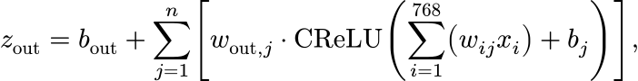 where:
z_outis the pre-activation of the output node (output_preactivation);b_outis the bias of the output node (BIAS_OUTPUT);w_(out, j)is the weight of the connection between thej-th hidden layer node and the output node (WEIGHTS_OUT[j]);w_ijis the weight of the connection between thei-th input andj-th hidden layer node (WEIGHTS_L1[i][j]);x_iis the value of thei-th input;b_jis thej-th hidden layer node’s bias.
During the quantization process, we multiply all weights and biases by some constants, SCALE_L1 (which I will denote S_L1)
and SCALE_OUT (denoted S_out).
We also change the definition of CReLU to clamp(x, 0, SCALE_L1) (instead of clamping from 0 to 1).
I’ll denote this new CReLU as CReLU_L1.
This gives us a scaled neural network output,
Let’s first focus on the CReLU, which is this part of the expression: 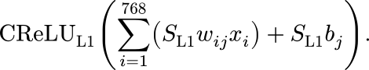
If we factor out S_L1, we get
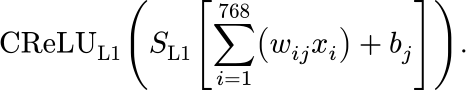
As you can see in the graph below,
we can pull out the scaling constant from the scaled CReLU_L1 to get a normal CReLU:
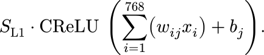
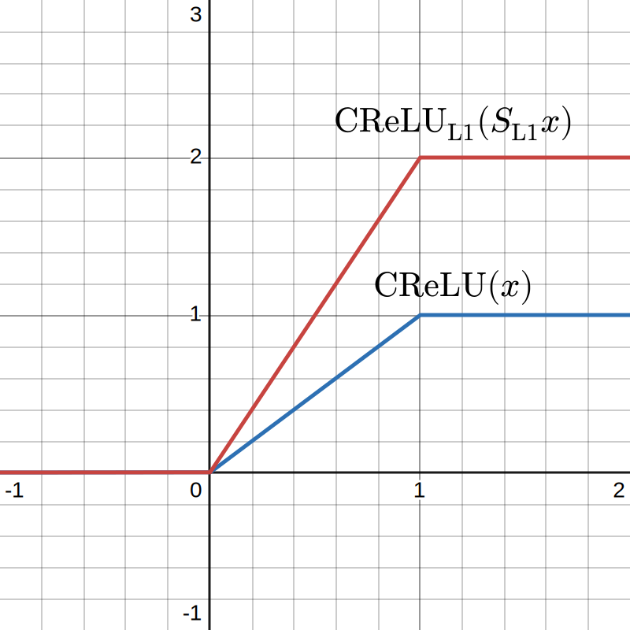
Now, the scaled output of our neural network is
which we can factor (S_L1 * S_out) from to get
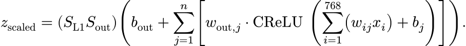
Note that inside the bracket is the original, unscaled output of the neural network:
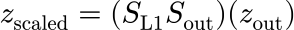
from which we get
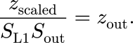
To conclude, at inference time, after scaling the weights, biases, and the CReLU function,
we can recover the unscaled output by dividing the scaled output by SCALE_L1 * SCALE_OUT.
↩
Appendix: Having no training data
In the post, I mentioned a few issues with the chess engine that I actually built, chess-inator. Most importantly, the NNUE is trained on a few orders of magnitude less data than it should have been trained on. Below, I document how that affected my project. Note that nothing in this section reflects best practice: I’m writing this purely to document what happened during the project.
There are two reasons I could not train the NNUE on a sufficiently large dataset; first, I was using data from SPRT tests (instead of generating them specifically for NNUE training), and also, my training code was not able to handle large datasets. As I mentioned in the post, someone in the Engine Programming Discord recommended using a 5000 node limit to generate training data. In my engine’s training, there is no such limit, so searches take longer to finish. This already reduces the number of positions that can be generated as training data. My training pipeline also heavily limited the datasets I could train on, as I I encoded positions in compressed text files as zeroes and ones corresponding to the input features. In hindsight, this is one of the most inefficient options there is, considering that in chess, most of the inputs are 0 at all times. The compression also didn’t help much because once you load the data in memory, it must be decompressed to allow for random access. Aggravating the memory usage problems, the Python library I used to deal with the training data, pandas, isn’t great at dealing with huge datasets.
When I first implemented NNUE in chess-inator, I trained it on roughly a thousand games from my own testing. This was, in hindsight, woefully too little training data. During games, this network would would make egregious tactical blunders, demonstrating a total lack of material knowledge. Later models were trained on barely more data, around tens of thousands of games; this was not enough of an improvement.
At the time, I could not fix the neural network’s tactical blunders, so I decided to use a hacky solution. I hardcoded the material knowledge in the neural network by directly writing piece values into the neurons before training. After this modification, the neural network would at least match the performance of material counting evaluation.
Generally, I would say this strategy worked in my situation; all of my NNUE models are trained with hardcoded material knowledge, and they’re definitely superior at chess than the non-NNUE evaluation functions.
Still, training with really low amounts of training data has its issues. Notably, the engine isn’t realizing the potential of its current neural network architecture; lots of performance could still be achieved just by increasing the amount of data. Also, there are weird artifacts in the evaluation function: sometimes, the score for a specific position will be thousands of centipawns off.
Unfortunately, this is the point where I left off on chess-inator; I never fixed the neural network’s lack of training data. This was my first real project in machine learning, and ultimately I learned that throwing more data at an ML problem is usually a good idea. It would be really fun to come back4 to chess-inator and properly train the neural network with lots of data, but the reason I stopped working on the project was that chess engine development is highly addicting, and I’m scared of getting sucked back in. ↩
-
Because of how chess works, there will never be a White pawn on a1, so this bit is useless. However, such redundancy helps simplify our code, so it’s fine to leave it there. ↩
-
As I understand it, Stockfish no longer uses HalfKP as of today; they use HalfKA. ↩
-
As of writing, it has been a few months since the last commit of chess-inator. ↩